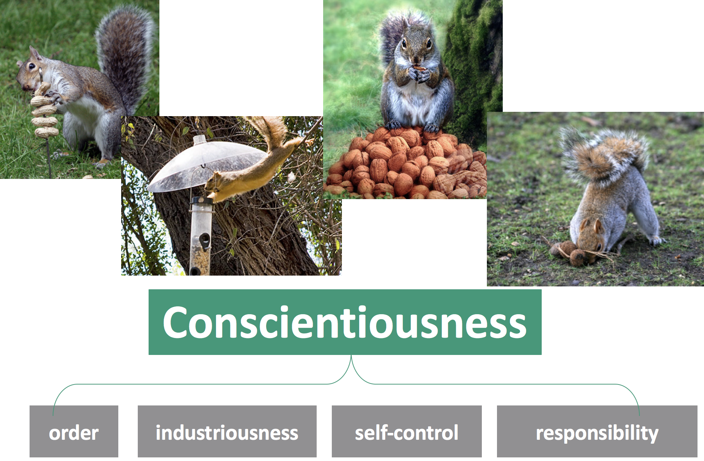

Jackson et al., Psychological Science, 2015

Simplified overall model with yearly health as example: \[ Adherence = {\beta}_{0}+{\beta}_{1}Covariates + {\beta}_{2} YearlyHealth + {\beta}_{3}Conscientiousness \\ + {\beta}_{4}Conscientiousness*YearlyHealth \]
| Predictor | odds ratio | 95% CI |
|---|---|---|
| Health | 0.76 | [.73 .79] |
| Conscientiousness | 0.7 | [.60 .78] |
| Neuroticism | 2.69 | [2.48 2.92] |
| Health*Conscientiousness | - | - |
| Health*Neuroticism | - | - |
When health is poor, are you more likely to nonadhere given your personality?
| Predictor | odds ratio | 95% CI |
|---|---|---|
| Health | 0.76 | [.73 .79] |
| Conscientiousness | 0.70 | [.60 .78] |
| Neuroticism | 2.69 | [2.48 2.92] |
| Health*Conscientiousness | 0.87 | [0.81 0.94] |
| Health*Neuroticism | 0.99 | [0.93 1.04] |
| Predictor | odds ratio | 95% CI |
|---|---|---|
| Importance | 0.64 | [.56 .74] |
| Side Effects | 1.21 | [1.07 1.37] |
| Cost | 1.02 | [1.01 1.03] |
| Neuroticism | 2.85 | [1.41 3.81] |
| Importance*Neuroticism | - | - |
| Side Effects*Neuroticism | - | - |
| Cost*Neuroticism | - | - |
| Predictor | odds ratio | 95% CI |
|---|---|---|
| Importance | 0.64 | [.56 .74] |
| Side Effects | 1.21 | [1.07 1.37] |
| Cost | 1.02 | [1.01 1.03] |
| Neuroticism | 2.85 | [1.41 3.81] |
| Importance*Neuroticism | 0.87 | [0.81 0.94] |
| Side Effects*Neuroticism | 0.99 | [0.93 1.04] |
| Cost*Neuroticism | 0.87 | [0.81 0.94] |
| Predictor | odds ratio | 95% CI |
|---|---|---|
| Importance | 0.64 | [.56 .74] |
| Side Effects | 1.21 | [1.07 1.37] |
| Cost | 1.02 | [1.01 1.03] |
| Conscientiousness | 0.26 | [.13 0.50] |
| Importance*Conscientiousness | - | - |
| Side Effects*Conscientiousness | - | - |
| Cost*Conscientiousness | - | - |
| Predictor | odds ratio | 95% CI |
|---|---|---|
| Importance | 0.64 | [.56 .74] |
| Side Effects | 1.21 | [1.07 1.37] |
| Cost | 1.02 | [1.01 1.03] |
| Conscientiousness | 0.26 | [.13 0.50] |
| Importance*Conscientiousness | 0.66 | [0.43 0.90] |
| Side Effects*Conscientiousness | 0.41 | [0.25 0.66] |
| Cost*Conscientiousness | 0.99 | [0.99 1.00] |